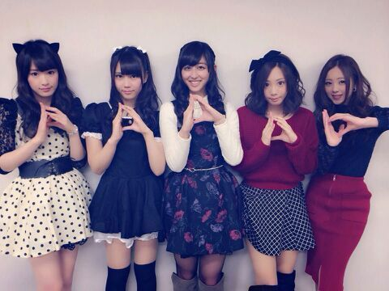

は〜い .♪
ろってぃ-だよ.
昨日も、 外は 雪が降ったりだとかでとっても寒かったですよね:-<
怪我はないですかあ？
滑って転んだりしてないですか？
そんな中 昨日は千葉幕張メッセにて
個別握手会がありました !
昨日は 完売だったと言うのを聞いて
本当に嬉しかったです.*
握手会に来てくださった皆さん
ありがとうございます(。・ω・。)ゞ
そして、 私服Rottyです.♪
寄り
全身
どうですかあ(#^.^#)？
本当に大人っぽいよね〜と言われたりして
恥ずかしかったです (/-＼*)てへ
全然大人っぽくないです..ありがとうございます。
赤のタイトスカート。
そして この上のトップスが、かずみんにプレゼントした洋服の色違いです.
かずみんは 黒で ろってぃ-は 紺 /
昨日 かずみんも着ていました.『この服 使い回しきく〜(*^-^*)ありがとーう』と言ってくれました あは♪
嬉しゅうキモチ。
そして、二月生まれのメンバー達の生誕祭もあり、
私は かずみ と ちはる の生誕祭に参加しました..*
あみとまひろで 早目に待ち合わせして
会場にきて 手紙を書きました。
それを ファンの皆さんの前で読ませて頂きました..*
書く前に携帯に下書きしてあったから それをコピーして貼ります./
かずみへ...
かずみ、二十歳!! お誕生日おめでとう☆
もう二十歳とゆうことで つまり立派な大人とゆうこと。
でも これからも中身は変わらず その素敵な笑顔と
誰もが愉快な気持ちになれる裏声と引き笑いとで
世界中を幸せにしてください。
ずーさん、だーーーいすき はーと
ちはるへ...
ちはる、17歳!! お誕生日おめでとう ♪
ちーちゃんは見た目大人っぽいのにまだ17歳で
仕事と学業の両立が大変な時もそんな姿は見せずに頑張ってるよね.
こんな私たちを 母のような心で包んでくれます。
いつも 私たちにご飯をよそおってくれてありがとう。
こんな 私達だけど 何かあればいつでも相談してね。
年中無休 受付中だよ。
ちーちゃん ダーーーイ好きっ
まひろ, あみ, ひな より。

大事な仲間.*
ありがとう。ろってぃーより♪